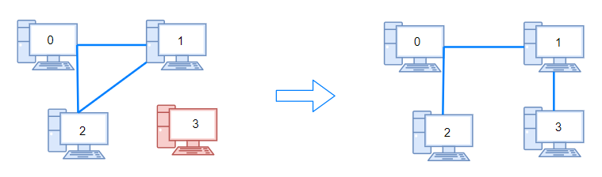
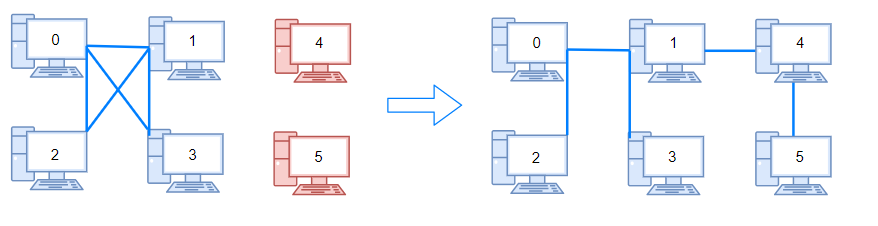

| Category | Difficulty | Likes | Dislikes |
|---|---|---|---|
| Algorithms | Medium | 5511 | 83 |
depth-first-search | breadth-first-search | union-find | graph
ibm | amazon | phonepe | salesforce | facebook | google | akuna-capital
There are n computers numbered from 0 to n - 1 connected by ethernet cables connections forming a network where connections[i] = [ai, bi] represents a connection between computers ai and bi. Any computer can reach any other computer directly or indirectly through the network.
You are given an initial computer network connections. You can extract certain cables between two directly connected computers, and place them between any pair of disconnected computers to make them directly connected.
Return the minimum number of times you need to do this in order to make all the computers connected. If it is not possible, return -1.
Example 1:

Input: n = 4, connections = [[0,1],[0,2],[1,2]]
Output: 1
Explanation: Remove cable between computer 1 and 2 and place between computers 1 and 3.Example 2:

Input: n = 6, connections = [[0,1],[0,2],[0,3],[1,2],[1,3]]
Output: 2Example 3:
Input: n = 6, connections = [[0,1],[0,2],[0,3],[1,2]]
Output: -1
Explanation: There are not enough cables.
Constraints:
1 <= n <= 1051 <= connections.length <= min(n * (n - 1) / 2, 105)connections[i].length == 20 <= ai, bi < nai != bi